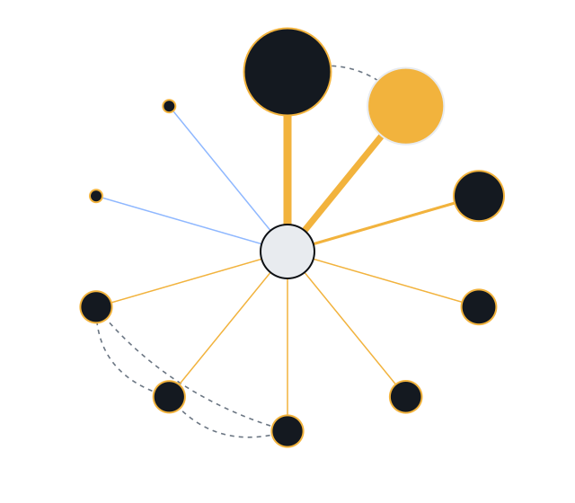
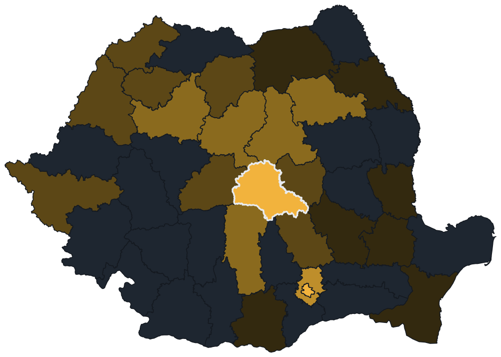

explore / contracting authority
MUNICIPIUL BRASOV
buys · contracting authoritysells · no Records as supplierCUI 4384206Brașov county · Municipiul Brașov · localplacement from ANAF
Appears in SEAP as MUNICIPIUL BRASOV · 1,817 Records · 10 Aug 2020 to 23 Oct 2026
grivei.ai/explore/authority/4384206/relationships?pick=17296459
top counterparties · pick one to list its Records

MUNICIPIUL BRASOVCOMPREST 560.81MRS ACTIV 431.67MBMC TRUCK & BUS 187.07MEREN CONS 89.39MSynergy Construct 75.17MUBITECH CONSTRUCȚII SRL 73.72MCONIM PARTNERS 73.72MMITHRAS BUILD 73.72MWI-NOVATION 3.65MDANINA STAR 3.20M- contracts
- direct purchases
- won together
- circle size = RON awarded
awarded value per month · Jan 2024 to Oct 2026
202420252026
tallest month: July 2026, 672M RON · framework ceilings left out
picked counterparty
RS ACTIV431.67M RON · 25 Records · 10 Signals
Won together with COMPREST, FINCODRUM and RECON. Its share of a consortium Record is an equal split, by convention.
- CAN1172752 · 14 Jul 2026 · with COMPRESTContract de delegare a gestiunii contractului privind activități de salubrizare (măturatul, spălatul și stropitul căilor publice din localitate…)328.35M RON
- CAN1172752 · 14 Jul 2026 · with COMPRESTContract de delegare a gestiunii contractului privind activități de salubrizare (măturatul, spălatul și stropitul căilor publice din localitate…)306.00M RON
- CAN1147301 · 29 Apr 2025 · no prior publicationLot 2 -LUCRĂRI DE ÎNTREȚINERE ȘI REPARAȚII STRĂZI ZONA SUDICA A MUNICIPIULUI BRAȘOV21.76M RON
- CAN1145000 · 29 Apr 2025 · with FINCODRUM and RECONCLucrari de intretinere si reparatie a strazilor din zona nordica a Municipiului Brasov-lot 117.44M RON
- SCNA1098851 · 8 Feb 2024 · consortium of 3Proiectare și execuție construire sanie de vară în Poiana Brașov17.15M RON
Flow lens · where this authority's money goes

< 5M5M25M100M400M +nothing
- Brașov1,594.6M RON
- București489.8M RON
- Ilfov386.0M RON
- Mureș86.9M RON
- Argeș83.9M RON
- Neamț73.8M RON
- county unknown61.3M RON
supplier county, RON awarded since 2021 · 23 counties in all · counted by the same rule as every total